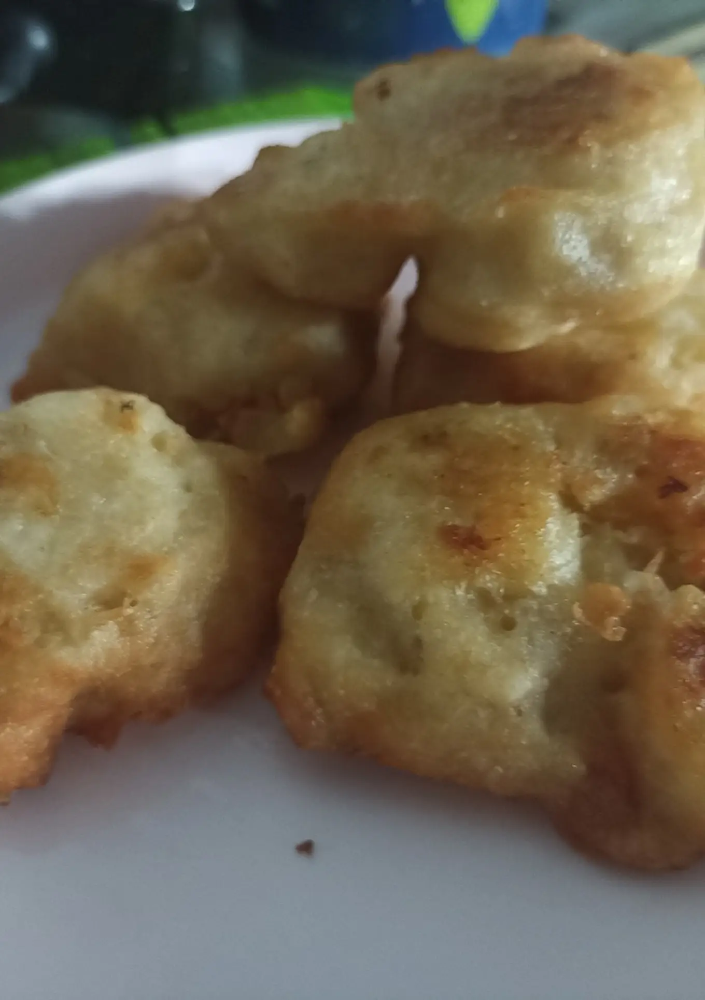

Pigosu
Bahan Bahan
1.4 buah pisang (boleh matang boleh mentah )
2.SKM(Susu kental manis) sesuai selera, terserah
rasa apa, tapi rasa SKM nya sangat mempengaruhi
3.Tepung terigu Secukupnya
4.tepung beras Secukupnya
5.Air Secukupnya
Langkah langkah
1.Kupas semua pisang dan taruh di dalam wadah, lalu hancurkan sampai lembek
2.Ambil pisang yang sudah lembek, lalu isi dengan SKM sesuai selera, lalu bulatkan,
3.selanjutnya siapkan mangkok baru, lalu campur tepung terigu, tepung beras, dan air lalu aduk hingga rata,
4.Lalu celupkan pisang yang sudah dibentuk tadi ke campuran tepung itu,
5.Lalu goreng dengan api kecil dan minyak sampai kekuningan
Kalau sudah angkat dan siap dihidangkan, bisa ditambah SKM lagi diatasnya lebih enak